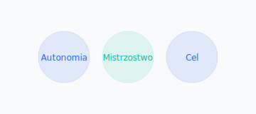
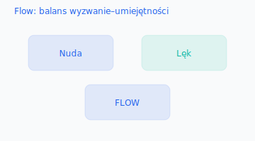

Współczesne modele
Pink — Motywacja 1.0 / 2.0 / 3.0
- 1.0: przetrwanie biologiczne.
- 2.0: kij i marchewka (zewnętrzna) — dobre dla rutyny.
- 3.0: autonomia, mistrzostwo, cel (wewnętrzna) — model XXI wieku.
Autonomia w sprzedaży
Zadania: priorytety, wybór klientów.
Czas: elastyczny harmonogram.
Technika: metody, narzędzia, negocjacje.
Zespół: dobór współpracy, mentoring.
Mistrzostwo
Mindset wzrostu: wyzwania jako okazje.
Deliberate practice: celowe ćwiczenie słabości.
Feedback loops: szybkie iteracje.
Cel — sens pracy
- Osobiste why
- Wpływ na zespół
- Misja organizacji
- Beyond profit
Blanchard — przywództwo sytuacyjne

S1 Directing: R1 — jasne instrukcje, ścisły nadzór.
S2 Coaching: R2 — wyjaśnianie, wsparcie, motywowanie.
S3 Supporting: R3 — wspólne decyzje, uznanie.
S4 Delegating: R4 — pełna autonomia, monitoring wyników.
Flow — optymalny stan
- Jasne cele
- Natychmiastowy feedback
- Odpowiedni poziom trudności
Neurobiologia motywacji (Mrozowski)
Poziomy: demotywacja → neutralny → motywacja właściwa → pasja.
Praktyka: diagnoza przyczyn, podnoszenie energii, usuwanie barier.